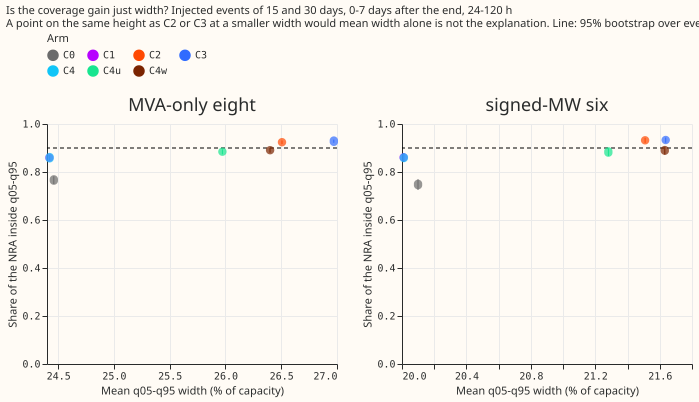
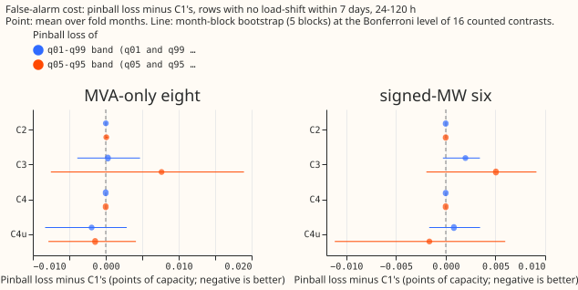
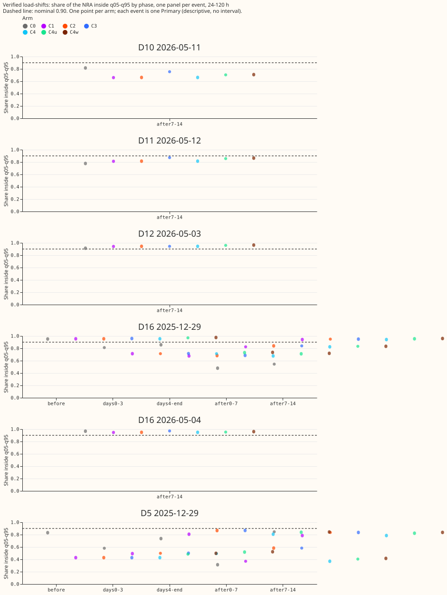
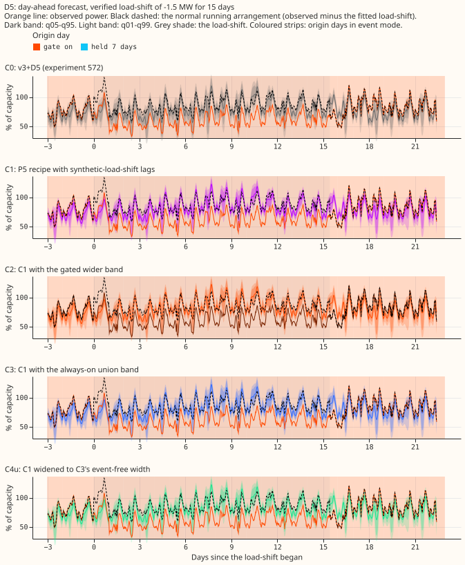
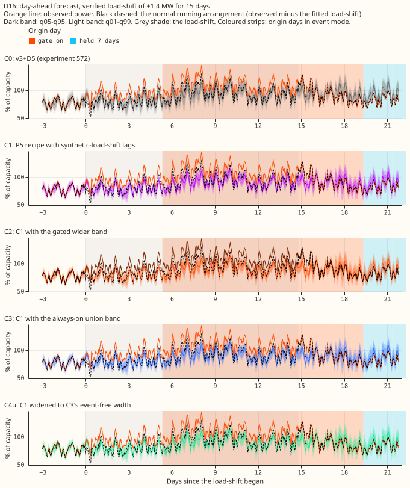
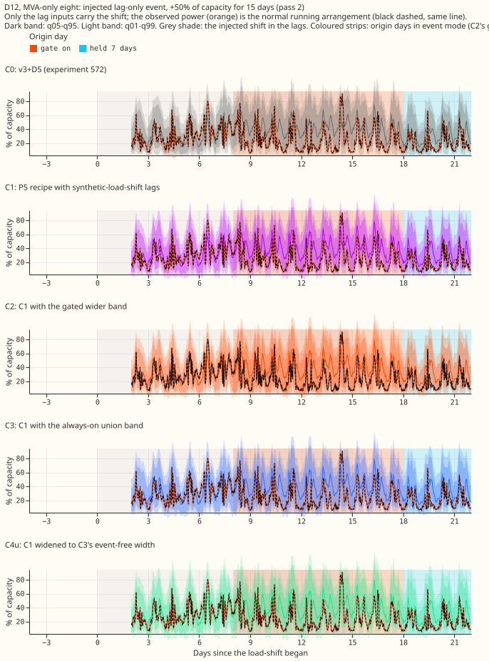
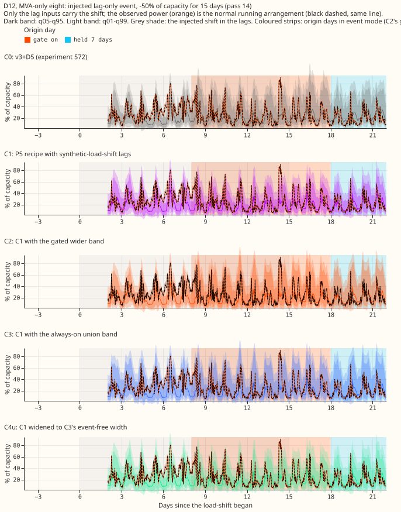
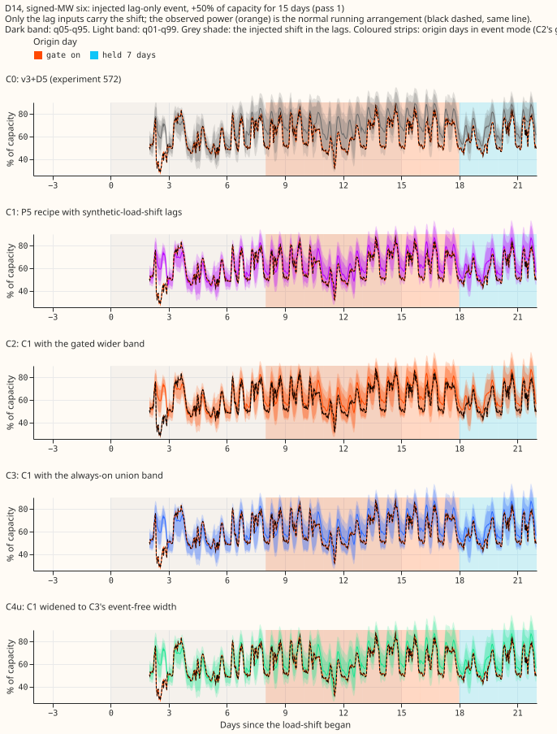
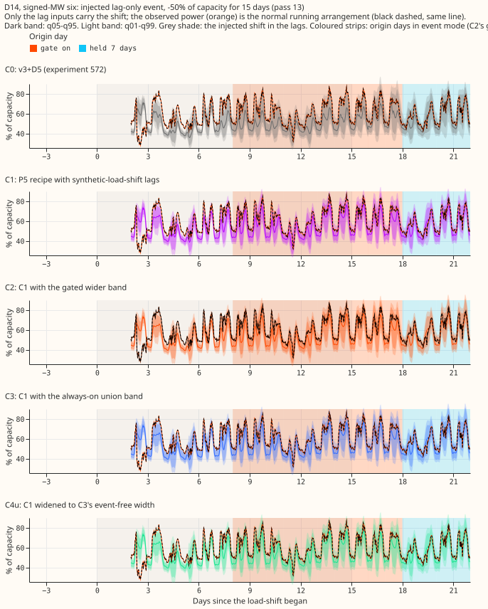

Does the best normal-running-arrangement forecast we can assemble (the embargoed three-step recipe trained with lag-only synthetic load-shifts, plus a wider band while a load-shift is suspected) put the normal running arrangement inside its band on 0.90 of rows after a load-shift ends, and is that more than extra width?
The best of the five arms keeps its 90% band (the q05 to q95 quantile range) around the normal running arrangement (NRA) on 0.93 of rows in the week after an injected load-shift ends, up from 0.76 for the earlier v3+D5 forecast. On the verified December 2025 pair of real load-shifts, the same band covers 0.84 and 0.58 of rows at the two substations (D16 and D5), below the 0.90 target.
A load-shift moves part of one primary substation's demand onto another, so the recent power readings no longer show the NRA, the power the substation would have drawn without the load-shift. A row is one forecast half-hour for one primary substation (a Primary), 24 to 120 hours ahead. We asked whether a neural-network forecast, trained on lag inputs (power readings one day and one week old) that carry synthetic load-shifts, plus a band that widens while a gate is on (a rule that fires when the lags disagree with a forecast made without them), can put the NRA inside its 90% band on 0.90 of rows in the week after the load-shift ends. We scored it on 1,248 injected load-shifts (a constant shift added to the lag inputs only; the headline rows use the 672 that last 15 or 30 days) and on the verified December pair. We compared the gated band with a band widened by one constant factor to the same mean width on those rows. The gated band reaches 0.927 and the matched-width band 0.890, so about 0.04 comes from placing the width where the gate is on, not from width alone. The arms C0 to C4w are defined under "Arms and what each one is".
Verdict: partly supported. Nothing here is adopted for production. All numbers come from the five fold months, with refits on days 0 and 14.
Figures





Day-ahead forecasts (issued 09:00 the day before the valid day) around the verified December pair. The gate at D5 was on for the whole window, so its strip covers the plot.


Day-ahead forecasts around four injected events (fixed rule: month 2025-10, the lowest-numbered Primary of each metering group, 15 days at 50% of capacity, up and down). Each of the five arms is one panel.




Other cuts (all lengths, one-sided shares, each group alone) sit beside this page as coverage90_*
and nra_side95_*. Stored forecasts cover 0 to 120 hours only, so no 14-day horizon plot exists;
NGED care about 1 to 10 days, so every number here is a short-lead result.
Arms and what each one is
- C0: the v3+D5 forecast of experiment 572 (stored): a neural network that reads day-old and week-old power lags, with a slow output offset, refitted on days 0 and 14 of each fold month.
- C1: the P5 recipe of experiment 574 (embargoed three-step schedule with the thermal-lag and solar-gain columns), with one new fine-tune per fold month, refit day, and seed (20 fits) in which the lag inputs carry lag-only synthetic load-shifts on 5% of each Primary's time, the recipe of experiment 581 (depths 15%, 30%, 50% of capacity, lengths 3, 7, 15, 30 days, random sign). The targets stay clean. Step 2 and the B1 statistics are experiment 574's stored files.
- C2: C1 with the gated band of experiment 583 (A2): the widest of C1's band and the band of C1's lags-masked twin while the gate on the lags is on and for 7 days after it releases, C1 elsewhere. The gate, its 3-day sustain rule and its 24 h lag age rule are experiment 583's.
- C3: C1 with the union band on every row (experiment 582's control).
- C4: C1 scaled about its median by 1.0001 so that its mean q05-q95 width on event-free rows at 24 to 120 h equals C2's. C4u: the same, scaled by 1.0635 to equal C3's. C4w (post hoc): scaled by 1.081, the ratio of C2's to C1's mean width on the after-end rows of the injected bank.
Results
- Row set:
experiment_470_intersection_v1, five fold months (2025-10, 2025-12, 2026-01, 2026-03, 2026-06), 24 to 120 h unless stated, July 2026 unused, D15 and D18 cut before 2025-03-01, cleaned data. Seeds 0 and 1 averaged. Retraining: coarse refits (days 0 and 14); the contrast could depend on the cadence. - Coverage after the end (injected 15 and 30 day events, 672 Primary-events, 0 to 7 days after the end, q05-q95, 95% event bootstrap interval):
| Arm | Both groups | Eight MVA Primaries | Six MW Primaries | Mean width, % of capacity |
|---|---|---|---|---|
| C0 | 0.759 (0.746 to 0.772) | 0.767 | 0.748 | 22.75 |
| C1 | 0.860 (0.850 to 0.870) | 0.859 | 0.861 | 22.69 |
| C2 | 0.927 (0.921 to 0.933) | 0.924 | 0.932 | 24.54 |
| C3 | 0.930 (0.924 to 0.936) | 0.928 | 0.933 | 24.88 |
| C4 | 0.860 (0.850 to 0.870) | 0.860 | 0.861 | 22.69 |
| C4u | 0.884 (0.875 to 0.893) | 0.884 | 0.883 | 24.13 |
| C4w (post hoc) | 0.890 (0.881 to 0.899) | 0.891 | 0.889 | 24.53 |
- From day 4 of the event to its end (756 Primary-events, a different row set from the 672 of the week-after window): C0 0.753, C1 0.854, C2 0.889, C3 0.928, C4u 0.878, C4w 0.884. C2 stays below 0.90 there because the gate fires a median 4 to 6 days after onset in experiment 583's data.
- Tails, after the end, both groups (mean pinball loss, % of capacity; lower is better):
| Arm | q01 | q05 | q95 | q99 |
|---|---|---|---|---|
| C0 | 0.207 | 0.885 | 1.036 | 0.300 |
| C1 | 0.175 | 0.695 | 0.858 | 0.241 |
| C2 | 0.169 | 0.653 | 0.785 | 0.217 |
| C3 | 0.168 | 0.652 | 0.787 | 0.216 |
| C4w | 0.177 | 0.686 | 0.859 | 0.237 |
- Safe side of q05 or q95: the one-sided share of the NRA is 0.771 (C0), 0.876 (C1), 0.943 (C2), 0.945 (C3), and 0.901 (C4w), against 0.95 nominal.
- Event-free rows, 24 to 120 h (rows with no labelled or verified event within 7 days; 578,209 rows at 16 Primaries: the eight MVA, the six MW, and D15 and D18): C1 minus C0, month-block bootstrap at the Bonferroni level of 16 counted tests, in points of capacity. CRPS (continuous ranked probability score, estimated as 2 × the mean pinball loss over the 11 stored quantile levels): eight MVA Primaries -0.064 (-0.250 to +0.101), six MW Primaries -0.142 (-0.453 to +0.012), minimum detectable effects 0.175 and 0.233. Pinball at q05 and q95: -0.030 (minimum detectable effect 0.085) and -0.041 (-0.113 to -0.013, excludes zero). Absolute CRPS (eight MVA, six MW): C0 3.146 and 2.611, C1 3.081 and 2.465. Each contrast is the mean of five monthly differences, so it differs slightly from the difference of the pooled scores.
- False-alarm loss of the bands (pinball loss at q05 and q95 minus C1's, minimum detectable effect in brackets): C2 +0.0001 (0.0001) at the eight MVA Primaries and 0.0000 at the six MW Primaries; C3 +0.0076 (0.0132) and +0.0050 (0.0055); C4u -0.0015 (0.0060) and -0.0016 (0.0086). The gate was on for 0.4% of event-free origin days at the eight MVA Primaries (1 false trigger, 0.44 per Primary-year) and for none at the six MW Primaries.
- Verified December pair, 0 to 7 days after the end, 24 to 120 h (descriptive; one transfer, two Primaries):
| Event | C0 | C1 | C2 | C3 | C4u |
|---|---|---|---|---|---|
| D16 | 0.479 | 0.824 | 0.840 | 0.840 | 0.833 |
| D5 | 0.313 | 0.369 | 0.583 | 0.583 | 0.405 |
- Real-event caveat for C1: before the event, D5's coverage is 0.428 for C1 and 0.832 for C0, and D16's coverage from day 4 to the end is 0.677 for C1 and 0.858 for C0. Experiment 574's P5 without synthetic lags, scored on the same rows as a diagnostic, gives 0.505 (D5 before the event) and 0.710 (D16 from day 4 to the end). The difference therefore comes from the P5 recipe and not from the synthetic lags. The synthetic lags raise D16's coverage after the end from 0.775 to 0.824. The gate at D5 was on for 19 days before the event, on a gap of the opposite sign.
- Architecture and training regime: every arm is the modular lag-encoder mixture-density neural network of experiments 560 to 574 with a monotone-quantile output (11 stored quantiles). C0 is one-step fine-tuning from experiment 572's pre-training. C1 to C4w use experiment 574's three-step schedule (pre-train on ERA5 and CAMS, a fresh mixer on the whole ensemble history with a 3-day embargo, then a daily fine-tune with the embargo), where the daily fine-tune alone is re-run here.
- Predictions:
- P1 holds: C2 covers 0.927 against at least 0.90.
- P2 fails as worded: C4 covers 0.860, not at most 0.85. The pre-registered control had a factor of 1.0001, so it tested nothing about width. C2 exceeds C4 by 0.067, but exceeds the stricter post hoc C4w by 0.037, which is neither within 0.03 nor at least 0.05.
- P3 holds for C1 and C2, fails for C3: C1's CRPS is not worse than C0's. C2 adds +0.0001 of pinball loss at q05 and q95 on event-free rows, under the 0.001 threshold; C3 adds +0.0076 and +0.0050, over the threshold but under their minimum detectable effects.
- P4 holds: D5 0.583 and D16 0.840 for C2, against 0.313 and 0.479 for C0.
- Decision rule: coverage 0.90 or more on the injected bank holds for C2 and C3; extra event-free loss within the minimum detectable effect holds for both; a margin of 0.05 over the width-matched control holds against C4 and fails against C4w. Bonferroni count: 16.
- Not computed: the avoidable-curtailment cost, which needs node-level forecasts with
generators; BG2,
manual_heuristic, and climatology rows ; weekly refits.
Checks
- Median forecast minus mean of the 11 stored quantiles, event-free rows, % of capacity: C0 -0.58 (eight MVA Primaries) and -0.25 (six MW Primaries); C1 -0.52 and -0.38. Only quantiles are stored, so the mean forecast is not stored.
- Error of the median beside the quantile contrasts: mean absolute error of the median, event-free, % of capacity: C0 5.61 and 4.74, C1 5.52 and 4.47 (eight MVA, six MW). The error of the median points the same way as the quantile contrasts.
- Triggers fired: trigger 2 (the D5 and D16 coverage of C1 contradicts experiment 581's finding that all arms covered D5 before the event on 0.75 to 0.83); the explanation was tested above with P5 without synthetic lags. P2's control failure is explained above (a degenerate factor, not a defect in the method). No other trigger fired; leaving one Primary out was not run.
- Reviews: a fresh Sonnet review of the fit wrapper before the first fit found no leakage or
write-location problems and four lint and guard items, all fixed. A fresh Sonnet agent re-derived
the width factor, the coverage after the end, the CRPS contrast, and the verified-pair coverage
from the raw stored forecasts with its own code, and all matched. It found no leak of the injected
rows into the width factors and no error in the NRA reference; its three notes (in-sample factors,
two row selections, empty phases) are in the caveats. A fresh Sonnet agent reviewed the prose, and
its findings were applied, apart from the suggestions to rename the shared figure file
false_alarm_cost.svgand to expand every inherited acronym (P5, X3-syn, B1) beyond the links to the experiments that define them.
Caveats
- Only one verified transfer pair is in the fold months (a load moved from D5 to D16 and back, December 2025), so every real-event number is descriptive.
- Injected events add a constant shift to the lag inputs only, so the gate reads the injected lags and not a change in the power; the injected bank therefore flatters any rule keyed on the lags.
- Unlogged events: NGED's logs may miss events, so the event-free rows may hold events no label covers. The false-alarm loss is then too low, and the real-event slices undercount.
- Horizon: stored forecasts cover 0 to 120 h; NGED care about 1 to 10 days.
- D15 and D18 (report-only): C1's pinball loss at q95 is 2.78 against 2.50 for C0 on event-free rows.
- Width factors were fitted on event-free rows, apart from the post hoc C4w factor, which was read from the bank's after-end widths .
What the next experiment should answer
Whether the P5 recipe's weaker December D5 and D16 coverage is a property of the recipe or of that one pair, tested on the May 2026 transfers once enough unlogged events are ruled out, and whether a gate that reads the lags themselves, and so fires at the snap-back, lifts the day-4-to-end coverage of C2 from 0.889 to 0.90.
Plain-language definitions
- Coverage: the share of half-hours at which the true NRA lies inside the stated band; a 90% band should contain it on 0.90 of rows.
- One-sided share on the safe side: the share of readings at or above q05 (or at or below q95); nominal 0.95.
- Pinball loss at q05 (or q95, q01, q99): the penalty for a quantile forecast, small when the quantile sits where the reading falls. Pinball loss is the score for the tails.
- Gate: a rule that turns on when the recent power lags disagree with a forecast made without them for 3 days in a row.
- Width: the distance between q05 and q95, in per cent of capacity.
Further definitions, with worked examples, are in experiment 582's metrics page.
Scripts: ml-experiments/00584-nra-candidate-pack-x6/ (e00584_arm.py wraps experiment 574's fit;
e00584_score.py wraps experiment 583's scoring and adds the width controls; e00584_report.py
prints every table above). Code reused from experiments 572, 574, 580, 581, 582, and 583. Fitted
weights (.pt) and tables are in data/ml-experiments/00584-nra-candidate-pack-x6/ (private); the
C1 weights are under c1/work/models/P5.